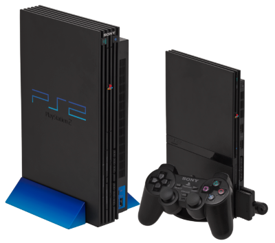

Somos a Vintage
A vintage volta um pouco no passado, para trazer para o público atual a tecnologia dos anos 70,80,90 e 2000 .
Uma boa parte dos adolescentes de hoje, não teve acesso aos computadores e vídeo games dessas décadas que acabei de citar e claro sabemos que quem jogou na época em que era lançamento ou por meio desse período tem vontade de usar de novo esse conssoles
Na vintage você tem a oportunidade de comprar um console ou um computador, como se estivesse na época de lançamento
